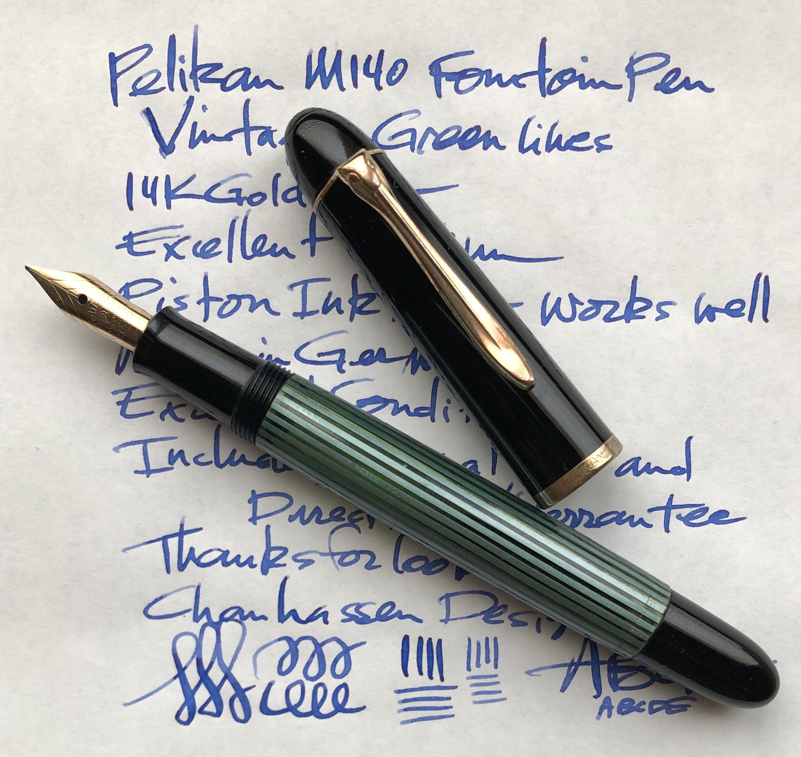

Akshay Kamal
developer | mentor
about me
I'm a full-stack web developer originally from San Francisco.
Currently, I'm studying computer science at the University of California, San Diego. I love learning about academia, keeping in touch with industry, and tinkering with side projects.
In addition to crafting elegant code, I pursue a number of hobbies.
In my spare time, I enjoy restoring vintage fountain pens, cooking and baking, and dancing to north Indian folk music.
projects
A few examples of recent work I've done.
At Mammoth Biosciences, I singlehandedly architected, built, and deployed an assay design tool for lab technicians, powered by Django. Using AWS services, I created a cloud-based platform for employees to design, save, export, and view the results of their experiments, which led to faster research output .
My experience at smartQED involved contributing to a case-based reasoning system in order to classify thousands of problems on StackOverflow, as well as helping deploy a web-scraping application that automated collection of those problems into a MySQL database. I also led the QA/Intern team during concurrent testing sessions and created Selenium scripts to automate web app testing.
skills
A list of some of my strongest technical skills - I love actively learning new technologies! View my full resume here.
Developer
I enjoy working across the full stack, making things that look great and work smart.
Development Languages
Django/PythonC++JavaScript/ES6HTML5/CSS3JavaAWS
Mentor
I love giving back to my peers as a tutor at the CSE Department at UCSD.
Expertise
Data StructuresObject-Oriented ProgrammingUNIXC/C++Software Tools and Techniques


interests
I started collecting and restoring vintage fountain pens in high school. I'm proud to have restored a 1950s era Esterbrook Model-J, a Parker 61, and a Pelikan M400. I also own and love a few other modern pens as well!
Restoring fountain pens is a hobby that I started by repairing my great-grandfather's fountain pen when I was a teenager. Since then, I've learned an incredible amount about pens themselves, the wonderful international fountain pen community, and motivated myself to start writing and improving my penmanship.
The best part is when I find an unidentified vintage; sometimes I can even resort to looking through patent records to figure out the best way to restore it! Every pen is a unique puzzle and has its own inherent beauty.
I've always been a fan of baking, but recently I've gotten into cooking as well! I started out learning how to make Indian food from my parents, but then delved into classical French cooking and other world cuisines.
My favorite things to make are lemon meringue pie, curries, granola, and unique salads.
I really enjoy cooking because I get to try tasty dishes, eat healthy, and experience the pride of serving great food that I've created myself!
Since I was 16, I've been a dancer of a form of Punjabi (north Indian) folk dance called bhangra. It's a vibrant, energetic, and graceful dance that was originally a way to celebrate the harvest in Punjabi villages.
Bhangra technically refers to a number of regional folk dances from Punjab, which all merged together to create the modern definition of the dance form. There are segments performed with props, slow segments, and plenty of fast segments. Punjabi culture became very mainstream in India and is now popular worldwide, so there's a good chance you've heard bhangra music or seen the dance!
I dance in the competitive US circuit, where teams from all around the nation (both college-affiliated and independent) choreograph unique sets to perform at huge competitions. Dancing competitively is one of the best workouts I've ever had, allows me to meet new people, and gives me the opportunity to travel all over the US.